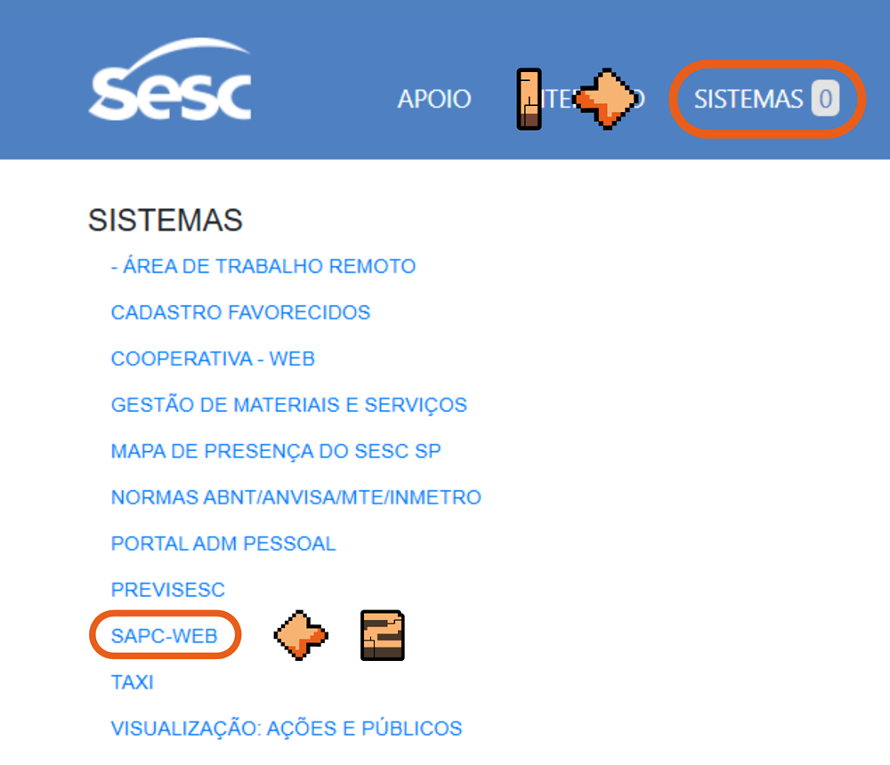
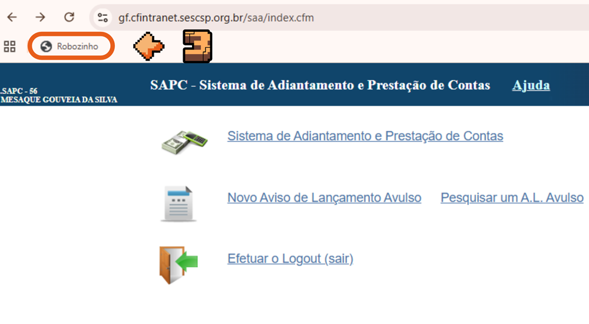

Robozinho
Powered with ❤ by Mesaque
Me arraste para sua barra de favoritos!
Robozinho
Não está vendo a barra de favoritos?
Pressione os botões Ctrl+Shift+B para mostrar sua barra de favoritos.
-
1
Acesse o Intrasesc>Sistemas>SAPC-WEB.

-
2
Após isso, clique no botão Robozinho que ficou nos seus favoritos.

-
3
Meu painel flutuante vai abrir. Preencha os dados e deixe o resto comigo!